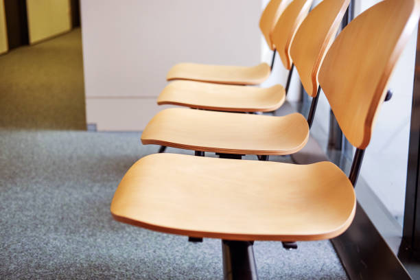
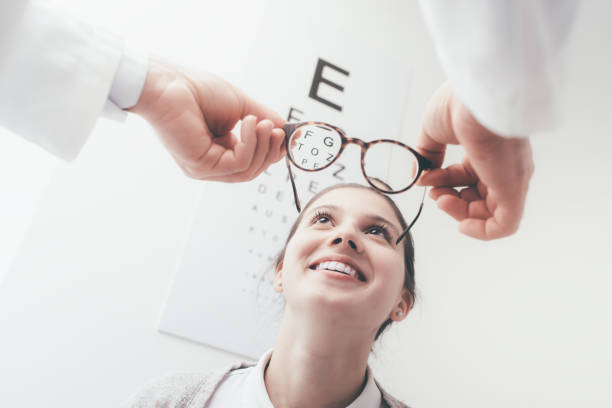
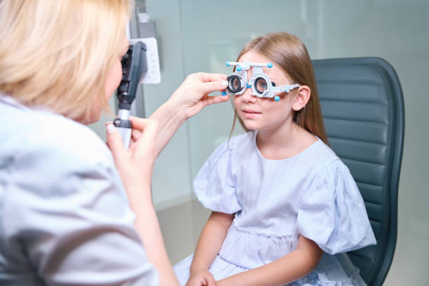

Soins de la vision & Rééducation
Soins professionnels, bilans visuels et rééducation oculaire dans la Vallée du Gier
Prendre Rendez-vousSitué à Génilac, notre cabinet d'orthoptie vous accueille dans un cadre moderne et confortable. Notre équipe de trois orthoptistes diplômées met son expertise au service de la santé visuelle des petits et des grands dans la région de Rive-de-Gier et de la Vallée du Gier.



Une prise en charge complète pour tous les troubles de la vision
Évaluation complète de votre vision binoculaire et de vos capacités visuelles. Examen approfondi avec tests spécialisés pour détecter tout trouble oculomoteur.
Séances de rééducation personnalisées pour corriger les troubles de la vision. Exercices adaptés à chaque patient pour améliorer les capacités visuelles.
Prise en charge spécialisée des enfants. Dépistage précoce et traitement des troubles visuels chez les plus jeunes dans un environnement rassurant.
Réalisation d'examens techniques : champ visuel, vision des couleurs, sensibilité aux contrastes et autres tests spécialisés.
Traitement de la fatigue oculaire liée aux écrans. Conseils et exercices pour améliorer votre confort visuel au quotidien.
Accompagnement des patients malvoyants. Optimisation des capacités visuelles restantes et adaptation à la vie quotidienne.
Chaque patient bénéficie d'un bilan approfondi. Nous prenons le temps d'évaluer précisément vos besoins visuels pour adapter la rééducation à votre quotidien.
Le cabinet utilise des outils de mesure de dernière génération, garantissant des examens fiables et un confort optimal durant les tests.
Nous assurons un lien constant avec votre ophtalmologiste et vos autres professionnels de santé pour une prise en charge globale et cohérente.